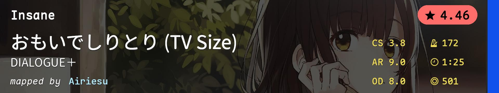
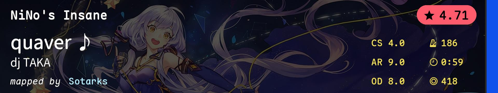
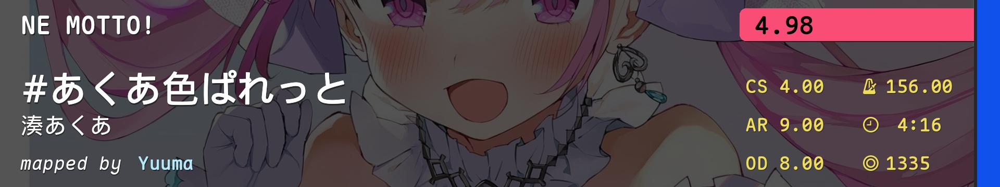
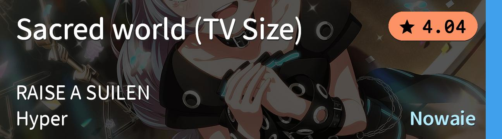
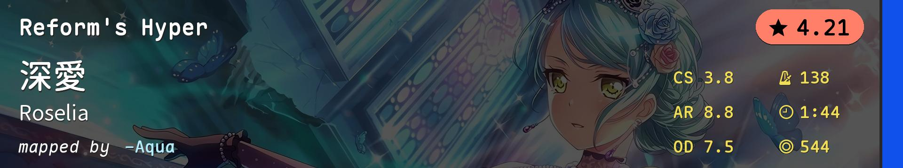
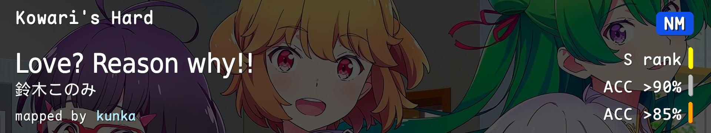
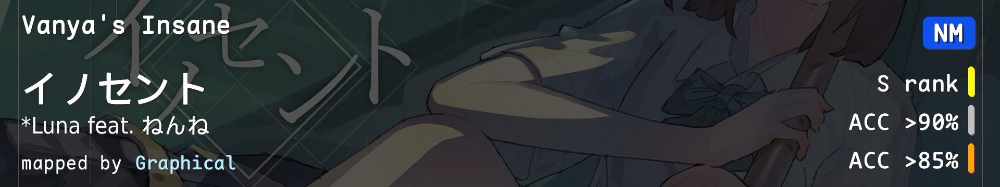
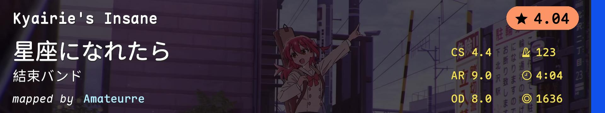

| # | BID | Beatmap Info | CS | HP | OD | AR | Hit Length | BPM | Stars | Notes |
|---|---|---|---|---|---|---|---|---|---|---|
| 1 | 2933166 |  | 3.8 | 5.0 | 8.0 | 9.0 | 1:25 (501x) | 172.0 | 4.46 | 综合 |
| 2 | 1836302 |  | 4.0 | 6.0 | 8.0 | 9.0 | 0:59 (418x) | 186.0 | 4.71 | 跳切+爆发 |
| 3 | 2587041 |  | 4.0 | 6.0 | 8.0 | 9.0 | 4:16 (1335x) | 156.0 | 4.98 | 4*最后的综合 |
| 4 | 2820902 |  | 3.5 | 5.0 | 7.0 | 8.5 | 1:28 (481x) | 142.0 | 4.05 | 慢速爆发 |
| 5 | 1697982 |  | 3.8 | 6.0 | 7.5 | 8.8 | 1:44 (544x) | 138.0 | 4.21 | 慢速跳切 |
| 6 | 4052451 |  | 4.0 | 4.0 | 6.0 | 7.5 | 3:12 (960x) | 137.0 | 3.46 | 慢速切/手控/低AR |
| 7 | 4275174 |  | 4.0 | 4.0 | 8.0 | 9.0 | 3:48 (1098x) | 128.0 | 3.81 | 慢速切/手控 |
| 8 | 1088966 | 3.6 | 6.0 | 6.0 | 8.0 | 1:46 (529x) | 220.0 | 3.78 | 节奏 | |
| 9 | 4056111 |  | 4.4 | 5.0 | 8.0 | 9.0 | 4:04 (1636x) | 123.0 | 4.04 | light alt/light tech |
| 10 | 2868385 | 3.5 | 3.0 | 6.5 | 8.0 | 3:42 (1175x) | 175.0 | 3.80 | 魔王曲 |